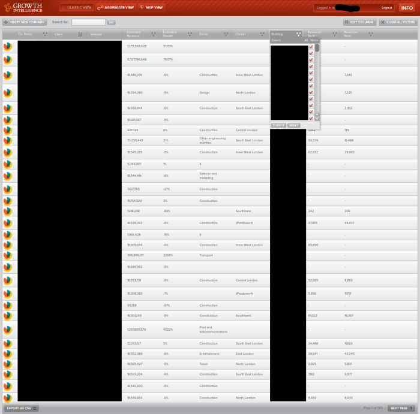
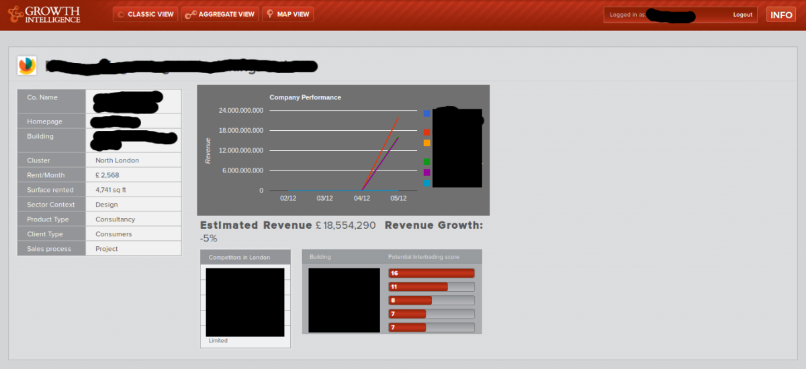
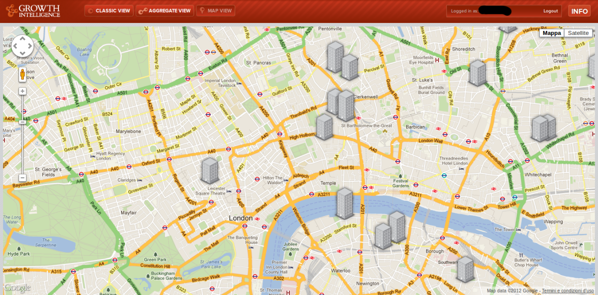

From idea to a product
This is my history in one of the first startups I worked for, very small, but nevertheless a very good learning experience.
Selling the idea
We had the vision, and we sold our vision in the way a lean startup would do: sell the vision, receive funding for the project, deliver the product. Turns out it is extremely hard to sell something that does not exist, but we did it. After a while we found our first customer, which believed in us and was the right kind of customer. We worked for about a month alongside them, formalized the vision into a product, writing schemas, functional specifications, project plans, time estimates, wireframes. I think they were quite supportive and not too pretentious. They also saw a lot of value in what we were delivering. We also won a TSB grant, which helped us to go through initial stages and eventually hire our second developer.
Studying the idea
How to realize what we had in mind went through many iterations. Nobody of us had the complete knowledge to realize what we sold, the company did not have the expertise in house and the possibility to afford anyone who had it, so we had to learn a lot. I am not talking about frameworks and libraries but algorithms. Luckily enough, all the stanford classes of the past year introduced us to the techniques that we ended up using… machine learning and nlp most of all. Our original idea was to be able to estimate how much a company is making in terms of revenue, estimating it with an acceptable margin of error, starting from data available publicly. There is a lot of data available publicly, some from Companies house, some from other financial institutes, some from the social sphere, some from search engines. Some information is also given away by the companies themselves on their site (e.g. testimonials, press releases, etc…). Some other from press releases of investors such as VCs. If you dig deep enough you will see there is a LOT of data, but the problem is that there is always noise, would this noise have compromised our efforts?
Machine learning
Turns out ML is a very vast field, much of it unexplored. Neural networks are not the only method to instruct a machine to take decisions like humans… there are many others. Human brain can fine tune automatically, but in a machine you have to pick the right algorithm: SVM, kNN, Naive bayes, NN, linear-logistic regression.. Once you know these techniques, actually what we do is pretty simple, take known connections between data and revenue, train the system and use it to predict revenue when we do not have it. In the real-world though, there is a lot of work to do on data.. smoothing, make sure it is time-overlapping, make sure features you chose represent well the reality, etc.
Choosing the technology
Python was the perfect choice for me. The one i have most experience with, and a very good language for prototyping ideas. I had previous experience in a startup using Scala and I was not able to reach the same development speed. I think slow development is absolutely to be avoided in a startup, it is a motivation killer… Generally in a startup you should use things you know well, it cuts development time. Forget all the cool techs you always wanted to try, try them in a personal project, not a serious startup. I know it is a blow, but you have to accept it, it is a matter of life or death. We used Mysql, not Cassandra. I knew Mysql very well already and, to be honest, how many Mysql experts can you find on the market? and how many Cassandra experts?
Building the team
When i joined, it was just me and the CEO. It is a pretty exciting time to join a company, i had to give a direction to everything in terms of software development. We needed a team, but i was not sure exactly what kind of person.. senior, junior, contractor? Our budget was limited, therefore the best choice turned out to be someone junior-mid level with potential to grow quickly in the organization. Which skills did we require in a developer? Initialy i thought we need someone that knew Python but having thought about it.. what we really needed is someone interested in what we do and in the algorithms we use. Python is such an easy language you can pick it up in a couple of weeks, and if you don’t, you are probably not the right kind of developer for us anyway.
Stay lean
All we needed is a shared folder for docs, a code repository, a virtual machine and a whiteboard with lots of post-it notes. No need for issue tracking or CI server when you start, but that is not an excuse to get sloppy with unit-tests. I like 5-10 minutes stand-ups in the morning, you get a sense of what the team is up to and you can offer solutions to problems pretty quickly. There is not really time for documenting code either, at the start it is all in the heads of people. I am a fan of writing code like a prose, that is the best way to write docs.
Lesson learnt
- You are in a startup usually because you are incentivized by the idea, team or equity in the company, not because you have a good salary. Make sure you understand this.
- Team is the most important thing. Much better if you have the same level of experience but specialize in different things.
- Use what you already know, learn quickly what you don’t.
- Identify a market and clients before starting. Call them and sell them the product, before, during and after you build it.
- You have to tackle issues, not wait for somebody else.
- Write down the rules of the game before joining.
Launch!
We delivered our first version of the product a couple of weeks ago… Some screenshots:


